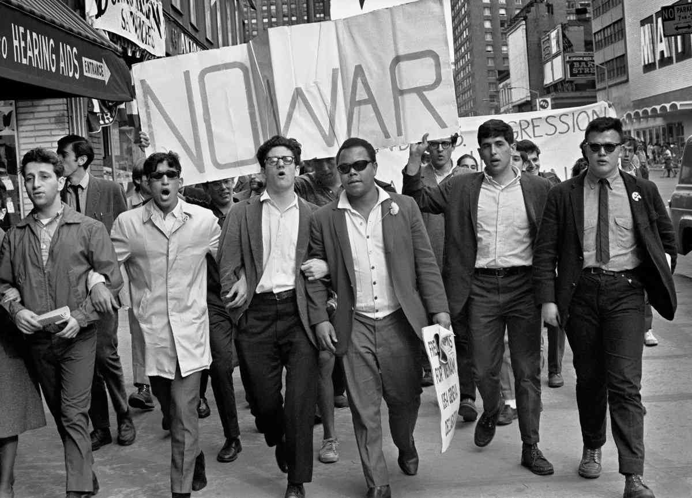

History
The 1960’s were a decade that saw tremendous change in society, fashion, attitudes and especially music. During the early part of the decade, the music of the sixties still reflected the sound, style and beliefs of the previous decade and many of the hit records were by artists who had found mainstream success in the 1950s. In 1963, people’s social views started to change, and this was heavily reflected in music.
